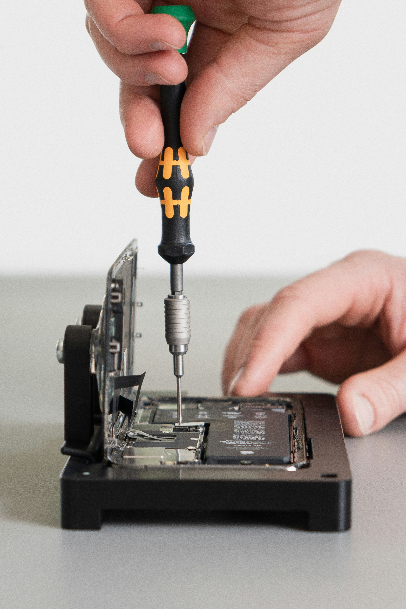

IT Servis pro Třebíč a okolí
Opravy iPhonů, počítačů a notebooků. Rychlá diagnostika, férový ceník a opravy na počkání u běžných závad — u nás na pobočce i s výjezdem.

Ceník
Ceník oprav a dílů
Vyberte kategorii. U iPhonů zobrazíme ceník oprav pro konkrétní model včetně DPH.
Servis na pobočce
Přineste zařízení na Novodvorskou 1077/15 v Třebíči. Diagnostikujeme závadu a domluvíme postup i termín.
Servis u vás
Nemůžete zařízení přivézt? Po domluvě přijedeme a běžné problémy často vyřešíme hned na místě.
Pomoc na dálku
Instalace softwaru, nastavení a drobné softwarové problémy vyřešíme i přes vzdálené připojení.
Jak probíhá servis?
4 kroky k opravě
Vždy víte, co se děje a kolik to bude stát — bez skrytých poplatků.
Převzetí zařízení
Zařízení přinesete na pobočku, objednáte přes web, nebo domluvíte výjezd.
Diagnostika
Provedeme prohlídku a určíme příčinu závady. U iPhonů máte ceny rovnou v ceníku.
Cena a souhlas
Potvrdíme cenu a termín. Bez vašeho souhlasu nic neopravujeme.
Předání
Po opravě vás kontaktujeme. Hotové zařízení si vyzvednete nebo domluvíme doručení.
FAQ
Často kladené dotazy
Potřebujete opravit zařízení?
Vyberte opravu v ceníku, zavolejte nebo napište. Servis v Třebíči — Novodvorská 1077/15, Nové Dvory.